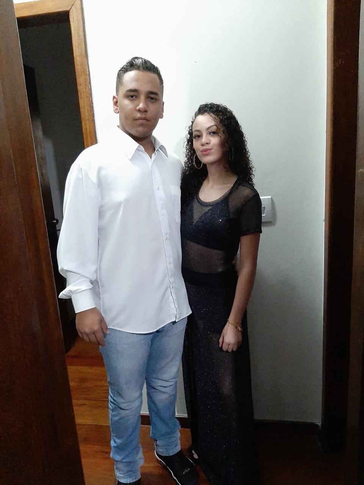

Capítulo 01 • Nossa história
O meu maior tesouro
Oii, minha irmã! 💗
Hoje é uma data muito especial para nós. No dia 20/11/2004, nasceu o meu maior tesouro: você.
Desde então, o mundo ficou mais bonito com a sua presença. Você é uma pessoa incrível, que merece tudo de mais lindo que a vida pode oferecer. Mesmo passando por tantas dificuldades, você nunca deixou de mostrar sua força e seu brilho.
Eu tenho muito orgulho de você, de tudo o que já superou e da mulher maravilhosa que está se tornando.
Sou muito feliz por ter você como minha irmã. Você é, e sempre vai ser, um dos maiores presentes que a vida me deu. 💕
Te amo, minha irmãzinha! ❤️